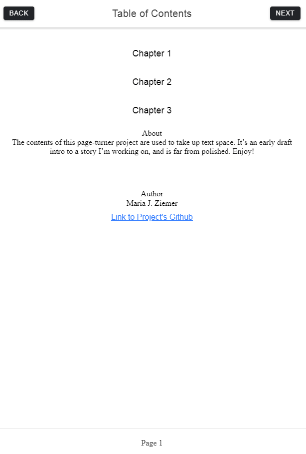

<!-- Project Page-Turner container -->
<div class="container">
  <h1>
    Project Ionic Page-Turner
  </h1>
  <!-- Page-Turner description & GitHub repo link -->
  <div class="about">
    <p>
      <span>Completed within February 2019</span>
      <br />
      {{ ionic }}
      <br />
      <br />
      <a target="_blank" href="https://github.com/Kyrune/Ionic-4-L05">
        Ionic Page-Turner GitHub Repo
      </a>
    </p>
  </div>
  <!-- Page-Turner images -->
  <div class="images">
    
    
  </div>
</div>
